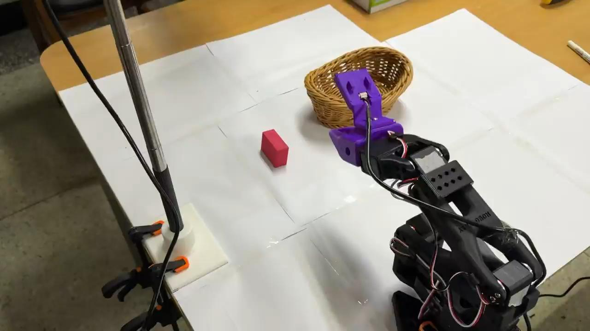
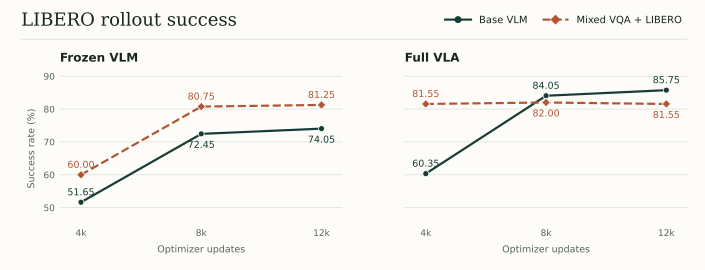
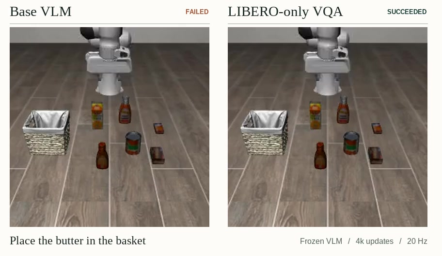
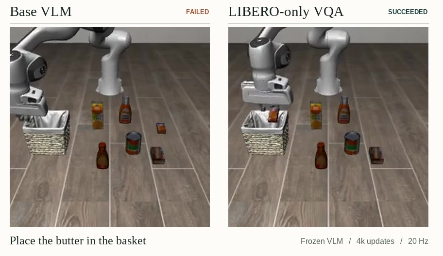
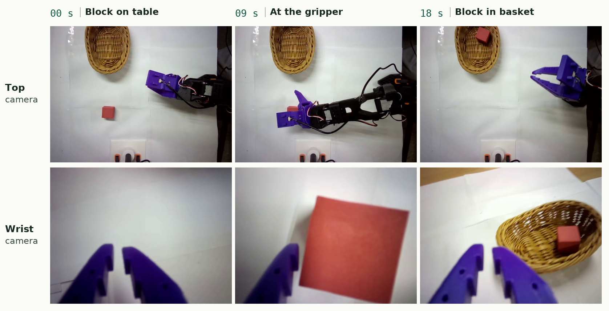

Vision–language–action models
Does visual grounding transfer to robot control?
A controlled SmolVLA study in LIBERO, with a physical SO-101 workcell and a LIBERO-Pro 2.0 extension.

Abstract
We asked whether answering questions about objects and their spatial relationships before action learning improves a robot policy trained on the same demonstrations. Across 40 LIBERO tasks, the answer depended on when and how the action policy was trained. At 12,000 optimizer updates, mixed visual question answering raised success from 74.05% to 81.25% with the vision–language model frozen. With joint tuning, the same initialization led at 4,000 updates but trailed the Base model at 12,000 (81.55% versus 85.75%).
On a physical SO-101, we recorded two synchronized camera views and six position channels per timestep, trained policies on 75 demonstrations, and verified a served checkpoint. A separate real-image test found coarse localization substantially easier than precise box prediction. In an interim Pro 2.0 comparison on 1,936 shared trial IDs, the frozen and jointly tuned 30k Base policies succeeded three and two times, respectively. Autonomous physical task success remains unscored.
01 / Research question
What should visual supervision transfer?
For a language-conditioned manipulator, choosing the correct object is part of the action problem. A single demonstration can also supervise where that object appears and how it relates to its neighbors.
New physical demonstrations require robot time, sensors and an operator. Our September design asked whether extra supervision derived from robot imagery could improve use of a fixed action dataset. To test the idea, we changed the visual starting point of the same action learner and measured task completion at several checkpoints.
One recorded LIBERO training example
In Spatial task 0, demonstration 0, frame 10, the instruction names the black bowl between the plate and ramekin. Its visible box is [688, 348, 830, 461] in XYXY coordinates on a 0–1000 scale. A second question asks whether the bowl’s visible-region center lies above or below the plate’s. The labeled answer is below. Both answers come from simulator instance masks.
Before action training
The Base VLM starts with released SmolVLA visual-language weights. Mixed + LIBERO starts from the same weights, receives two epochs on 21,861 LIBERO and 82,735 RoboInter-DROID questions, then one additional LIBERO epoch. The LIBERO-only and RoboInter-only starts each receive two epochs on their source.
During action training
The action-only condition freezes the VLM and trains the expert plus state, action and time projections. Joint tuning also updates action-connected visual, language and connector parameters. Unused output layers are outside the action-loss path. The action weights have the same seed-0 initialization across the LIBERO arms.
What the comparison controls
The action dataset is fixed at 1,693 demonstrations and 273,465 frames. Each optimizer update aggregates four microbatches of 16. Within a tuning scope, the initial VLM varies while architecture, action initialization, training seed and evaluation protocol are matched. Across scopes, learning-rate schedules also differ. Extra VQA stages change both source composition and training exposure.
Research contributions and inherited methods
SmolVLA supplies the architecture, LeRobot the training infrastructure and LIBERO the simulator and task definitions. We assembled the grounding data, constructed matched policy starts, ran the comparisons, captured attention from trained checkpoints and collected paired camera and action data at the physical workcell.
Evidence · September 22 meeting, pp. 4–15; method.json, simulation.json and libero-configs.csv in the companion evidence directory. Primary sources [1–3] appear on p. 10.
02 / Main result
The ordering changes during joint tuning
The mixed VQA start outperformed Base at every measured checkpoint with a frozen VLM. Under joint tuning, the Base start overtook it by 8k.

Table 1. Aggregate task success (%). All six configurations were evaluated at each checkpoint.
| VLA update scope | VLM start | 4k | 8k | 12k |
|---|---|---|---|---|
| Frozen VLM | Base | 51.65 | 72.45 | 74.05 |
| Frozen VLM | Mixed + LIBERO | 60.00 | 80.75 | 81.25 |
| Frozen VLM | LIBERO only | 62.00 | 78.30 | 76.75 |
| Frozen VLM | RoboInter only | 59.75 | 78.90 | 78.90 |
| Joint VLM + action | Base | 60.35 | 84.05 | 85.75 |
| Joint VLM + action | Mixed + LIBERO | 81.55 | 82.00 | 81.55 |
What counts as success?
We evaluated 10 tasks in each of Spatial, Object, Goal and Long with 50 episodes per task. LIBERO checks goal predicates after each environment step. Each episode contributes one binary outcome. With batch size 10, one action executed per policy inference and matched initial-state settings, the matrix comprises 36,000 scored rollouts.
At 12k, mixed VQA added 144 successes over Base in the frozen condition (1,625 versus 1,481). Under joint tuning its 4k lead of 21.20 percentage points became a 12k deficit of 4.20 points (1,631 versus 1,715). Both rows of this latter comparison jointly tuned the VLM and action side.
Evidence · libero.csv contains the success counts and denominators. libero-configs.csv identifies the saved training configurations; simulation-sources.json maps source files to hashes.
03 / Benchmark composition
Long accounts for 60 of the 84 extra successes
At 12k, 419/500 Long episodes succeeded with the joint Base policy and 359/500 with the joint mixed policy. Long (LIBERO-10) combines several manipulations in one instruction. Its contribution to the aggregate gap is large, although the direction varies across its individual tasks.
Table 2. Suite success at 12k (%); 500 trials per cell. Δ is mixed minus Base, in percentage points.
| Suite | Frozen Base | Frozen mixed | Joint Base | Joint mixed | Joint Δ |
|---|---|---|---|---|---|
| Spatial | 80.2 | 88.0 | 88.6 | 85.4 | −3.2 |
| Object | 79.2 | 88.0 | 87.6 | 89.6 | +2.0 |
| Goal | 79.2 | 80.8 | 83.0 | 79.4 | −3.6 |
| Long | 57.6 | 68.2 | 83.8 | 71.8 | −12.0 |
For the Long instruction to place two moka pots on the stove, joint Base and mixed succeeded 31/50 and 20/50 times. For placing the black bowl in the bottom drawer and closing it, the counts were 48/50 and 50/50. The terminal goal flag does not identify the failed substep.
Sensitivity to task selection. Omitting each task in turn leaves 1,950 episodes per condition. The 12k mixed-minus-Base gap ranges from +6.31 to +8.21 points with a frozen VLM and −4.82 to −3.33 points with joint tuning. Omitting the entire Long suite leaves 1,500 episodes and a joint gap of −1.60 points. These ranges measure variation with benchmark composition under one training seed.
A recorded difference at a shared initial state


Figure 2. Object task 6, butter into the basket, initial state 0. The frozen 4k Base policy timed out; the frozen 4k LIBERO-only policy succeeded. Across the 50 trials for this task they succeeded 21 and 47 times. The two re-recorded outcomes matched the original evaluation. The full video plays at 20 fps and holds the final frame of the policy that finishes earlier.
Evidence · libero-tasks.csv, sensitivity.csv, libero-video.json. This illustrative pair was selected for divergent outcomes.
04 / The physical workcell
From camera frames to a served policy
The SO-101 workcell tested whether the team could capture an instructed manipulation from two viewpoints, align it with joint commands and train a policy that serves actions on the real setup.

The calibrated leader–follower pair recorded 75 teleoperated demonstrations of a single instruction to pick up a red cube and place it in the basket. Each of 39,000 synchronized timesteps contains top and wrist camera images (480 × 640 pixels), a six-channel position state and a six-channel action for five arm joints and the gripper. All 75 episodes entered the real-data fit.
Four policy training records
| Run | Starting policy for real adaptation | Update scope | Updates |
|---|---|---|---|
| Direct | Public SmolVLA base policy | Joint | 7,500 |
| Original | Original VLM branch, external 30k | Frozen VLM | 30,000 |
| Aligned | Aligned VLM branch, external 30k | Frozen VLM | 30,000 |
| Curriculum | External 15k, then 1,045 updates on former validation episodes | Joint | 30,000 |
For Direct, 30,000 loop steps with accumulation four gave 7,500 optimizer updates at effective batch 64. All 489 Adam step counters in the saved state equal 7,500. A November 12 server log records this checkpoint handling action requests. The three later branches used effective batch 16 and different starting policies. Their training records establish completion; ranking them on hardware requires scored physical trials.
Evidence · November 3 meeting, pp. 26–28; November 17 meeting, pp. 44–51; real-world.json links the dataset, checkpoint state, launch and server records. Slide 51 gives a matching demonstration count and update count but no checkpoint identifier.
05 / Precision of visual grounding
Coarse location is easier than a tight box
We evaluated a separate 32-layer SmolVLM2-500M on externally sourced SO-101 imagery. The corpus contained 18,721 questions on 5,792 images. The split assigned 16,112 questions to training, 1,675 to validation and 934 to test. Two collection groups formed the test set; collection groups and exact image hashes were disjoint across splits. Greedy inference allowed up to 32 new tokens.
Table 3. Held-out VQA agreement with model-reviewed pseudo-labels.
| Question family | Criterion | Correct / total | Accuracy |
|---|---|---|---|
| Quadrant | Match one of four image regions | 197 / 243 | 81.07% |
| Relative position | Match image-coordinate direction | 37 / 51 | 72.55% |
| Color | Match color answer | 157 / 309 | 50.81% |
| Box | Intersection over union ≥ 0.50 | 24 / 331 | 7.25% |
How much overlap did the predicted boxes achieve?
We re-scored all 331 saved box predictions. Intersection over union (IoU) divides the overlap area by the union area of the prediction and reference. The mean was 0.161.
At the 0.50 threshold, 23/250 object-box questions and just 1/81 instruction-target-box questions passed. This narrows the measured difficulty to precision on the image task. Connecting it to grasp errors would require trial-linked image and action records.
Separate curriculum validation. On the same 1,675 validation questions before training and at selected epoch 4, a scorer that also accepts semantic answers in longer replies raised quadrant counts from 126/392 to 287/392 and relation counts from 47/96 to 82/96. Valid output format rose from 73/1,675 to 1,674/1,675. This split was used for model selection.
Physical collection targets as of November 23
| Instructed task | Simple · two blocks | Hard · three blocks |
|---|---|---|
| Pick specified color into a basket | 150–200 demos | About 250 demos |
| Stack the instructed blocks | 150–200 demos | About 250 demos |
Collection is ongoing. Completed counts by condition and any overlap with the prepared 75 episodes are unverified. Autonomous success additionally needs a checkpoint, a trial denominator and a goal criterion for each condition.
Evidence · real-world.json, real-box-pairs.csv, real-box-thresholds.csv and November 17 meeting, pp. 49–50. The companion code recomputes all IoU counts on CPU.
06 / Inside an action prediction
Where does an action query place its weight?
SmolVLA’s published Table 6 compares all-cross-attention (CA), all-causal-self-attention (SA) and alternating CA/SA architectures; the reported LIBERO averages are 79.0%, 74.5% and 85.5% [1]. We probed the alternating layers in two 8k policies using the same recorded two-mug manipulation.

Table 4. Mean weight (%) by key group, summed after the masked softmax over keys. Rounded values may differ from 100 in total.
| Frozen VLM, 8k | Layer type | Images | Language | State | Action |
|---|---|---|---|---|---|
| Base | SA | 46.7 | 20.2 | 3.8 | 29.4 |
| Base | CA | 54.9 | 36.6 | 8.4 | 0.0 |
| Mixed + LIBERO | SA | 50.0 | 19.5 | 3.7 | 26.9 |
| Mixed + LIBERO | CA | 60.3 | 34.7 | 5.0 | 0.0 |
Query position changes the available keys
In SA an action query can see prefix tokens as well as itself and earlier action tokens. In Base SA, action mass rose from 3.4% at the first query to 45.4% at the last. Averaged over queries, the two images together received more weight than action keys in both policies. CA assigned zero mass to action keys because its key set contains only the conditioning prefix.
Table 4 averages frames 20, 70 and 120 of a single demonstration, eight layers per type, 15 heads, ten denoising steps and 50 queries. At frozen 8k the mixed model combined greater mean image mass on this episode with higher aggregate task success. Attention weights omit the contribution of value vectors, and this episode has no rollout labels. These recordings cannot identify the cause of the joint 12k reversal or the published ablation results.
Evidence · attention.csv, attention-layers.csv and figure-attribution.txt. The capture checks normalization and uninstrumented action agreement on frame 20.
07 / Variation and scale
Grounding under changed scene conditions
Pro extends the question across many more benchmark conditions. Its visual questions, policy-training frames and scored rollouts each count a different unit.
| Policy-training source | Episodes | Observation frames |
|---|---|---|
| Original LIBERO | 1,693 | 273,465 |
| Pro 2.0 public video conversion | 37,396 | 8,227,242 |
| Pro condition-wise selection | 18,751 | 4,115,692 |
Table 5. Selecting approximately half of the episodes within conditions still leaves 15.1 times as many policy-training frames as original LIBERO. The adapter restores the native camera orientation and converts the end-effector quaternion to axis–angle for an eight-channel state.
From an episode to a grounded question
Draw temporal frames within recorded episodes. Keep the original 128-pixel agent-view RGB as the image source.
Replay logged actions in MuJoCo. Compare rendered RGB to the recording at whole-frame and object-region scales before accepting instance masks.
Derive visible boxes and directions between their centers. Check for duplicate images and cross-split task and episode overlap.
From 7,978 episodes and 15,534 images, we retained 30,597 box questions and 29,403 relation questions. The 60,000 examples split into 43,939 training, 11,478 validation and 4,583 test questions. Answer-only VLM tuning completed 2,748 optimizer updates across two epochs. Enlarging a 128-pixel observation to 512 pixels limits the spatial precision available to the model.
Independent reconstruction check. All 60,000 question/answer pairs were rebuilt from the accepted geometry index. For one available native HDF5 scene, the resized image hash and four messages matched. Fresh OSMesa replay of that S13 frame passed the whole-frame gate, while one object region produced mean error 6.74 (limit 5) and 95th-percentile error 25.85 (limit 25). Its fresh regional alignment remains unresolved.
Checkpoints available for evaluation
We verified saved 90k checkpoints for frozen Base, frozen Pro-VQA and joint Base. The first scored rollout logs are for the 30k checkpoints of the two Base branches. The following page reports the measured outcomes and their coverage as of 17:08 KST on November 23.
Evidence · simulation.json, simulation-sources.json; the public video conversion and native HDF5 are distinct sources [4]. The code README records replay thresholds, asset revisions and completion checks.
08 / Scored policy rollouts
Few successes on shared Pro trials
Of 1,936 trial IDs evaluated under both training scopes, the frozen-VLM policy succeeded on three (0.15%) and the jointly tuned policy on two (0.10%).
Both policies started from the Base VLM. The 18,751 selected training episodes cover 32 suite/task pairs. The official test split covers eight different base tasks and their variants. Each of the 339 test cases receives ten repeats, giving 3,390 planned rollouts per checkpoint. We matched outcomes by suite, task, variation and repeat. Each repeat sets the environment seed and initial-state index, and each trial ID seeds the policy noise. The simulator supplies a binary success flag for each finished rollout.
Table 6. Saved successes / scored rollouts at 17:08 KST, November 23, 2026. The official budget is the number of planned trials per policy.
| Suite | Official budget | Frozen VLM | Joint VLA |
|---|---|---|---|
| Long | 840 | 0 / 840 | 0 / 840 |
| Goal | 850 | 0 / 850 | 1 / 850 |
| Object | 860 | 7 / 860 | 1 / 246 |
| Spatial | 840 | 0 / 442 | — |
| All saved | 3,390 | 7 / 2,992 | 2 / 1,936 |
A dash denotes zero saved trials. Long and Goal each have complete coverage for both policies. Frozen Base also completed Object. The two column totals cover different trial sets.
Comparison on identical trial IDs
The shared set contains all 840 Long and 850 Goal trials, the same 246 Object trials and no Spatial trials. All three frozen-policy successes in this set occurred on Object. The joint policy succeeded once each on Goal and Object. The policies succeeded on different trials, leaving 1,931 trials where both failed.
Only one success separates these models on the shared trials. The shared set follows benchmark order and omits Spatial entirely. These observations establish a low success count on the covered held-out tasks. They leave the cause of failures and the final model ranking open. Measuring the effect of Pro VQA training requires scored rollouts for a Pro-VQA checkpoint.
Evidence · pro-30k-trials.csv records per-ID results, including missing outcomes. pro-30k.json records coverage and snapshot provenance. The count uses scored rows from the two 30k Base evaluations.
09 / Discussion
What the available measurements support
Across the six original LIBERO conditions, VQA initialization changed both early learning and the ordering at 12k. The sign of the final mixed-minus-Base difference survived every single-task omission within each tuning scope. Its magnitude depended particularly on Long. The single seed, differing learning-rate schedules across scopes, and additional exposure in the mixed regimen limit attribution to any one visual skill.
Physical SO-101 records establish a complete path from synchronized demonstrations to trained checkpoints and a served action request. The external real-image test identifies precision as a weakness under reviewed pseudo-labels. Measuring downstream effects on the four physical conditions requires tagged autonomous trials with successes, denominators and a common rubric. Both 30k Pro Base checkpoints recorded very few successes on the shared trials. Complete official coverage is still needed to characterize full-benchmark performance.
Historical checkpoints have separate protocols
A previous 100k pilot scored 308/400 (77.00%) with the action side trained and 309/400 (77.25%) with full tuning. A separate action-only 100k evaluation scored 1,494/2,000 (74.70%); a different full 15k initialization scored 1,682/2,000 (84.10%). Their evaluation or training conditions differ from the controlled runs on p. 3.
Reproducing the evidence
- Local CPU analysis
- The companion code ships task-level numerical counts, 331 anonymized predicted/reference box pairs and attention-figure inputs. It can regenerate the leave-one-task/suite-out table, IoU re-scores and published figures.
- Model experiments
- The training and evaluation recipes specify software and data revisions, commands, conditioning inputs and update scope. Full replay requires source archives, simulator assets, GPUs and matching VLM/starting policy exports for each arm. Real data and calibrated hardware are additional dependencies for physical reproduction.
- Records and media
- Printed evidence filenames refer to
site/evidence/in the release. The source recordings for Figs. 2 and 3 appear asassets/libero-comparison.mp4andassets/so101-demo.mp4on the project page. The team's September 22, November 3 and November 17 meeting records supply design and physical setup evidence.
Primary references and credits
- SmolVLA: A Vision-Language-Action Model for Affordable and Efficient Robotics (2025). See Table 6 for the published attention architecture ablation.
- Liu, Zhu, Gao, Feng, Liu, Zhu & Stone (2023). LIBERO: Benchmarking Knowledge Transfer for Lifelong Robot Learning. The original dataset credits CC BY 4.0. The LeRobot conversion lists Apache 2.0. Figure 4 uses two views from one demonstration with our attention overlays.
- Hugging Face LeRobot and the public SmolVLA policy. The release lists exact revisions, local changes, redistribution notices and figure credits.
- LIBERO-Pro 2.0, native training archive and public video conversion. Workcell photography, teleoperation clips and the paired simulator recording are team experimental materials.